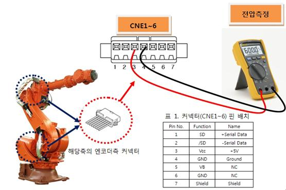

개 요
서보보드에서는 모터의 서보제어를 수행하기 위해 엔코더와 시리얼통신을 하여 주기적으로 엔코더 데이터를 수신하는데, 엔코더로부터 수신된 데이터는 정상이나 엔코더 데이터중 엔코더 스스로 내부상태를 감시한 결과가 에러상태인 경우 에러가 발생합니다.
원인 및 점검방법
|
1. 엔코더 공급전압을 확인하십시오. 2. 모터를 교체 시험하십시오.
|
1. 엔코더 공급전압을 확인하십시오.
엔코더에 공급하는 전원전압은 엔코더측 커넥터 공급 전압이 5V±5% (4.75V ~ 5.25V)범위 내에 있어야 합니다. 엔코더측 커넥터 전압이 4.75V이하로 떨어질 경우, 엔코더가 정상 동작하지 않아, 상기 에러 발생 가능성이 있습니다.
엔코더측 커넥터 pin(3-4)의 전압을 측정해 주십시오.

측정된 전압이 기준전압보다 낮을 경우 엔코더 전원공급장치의 +5V ADJ(E) 전압조정 단자를 돌려 엔코더측 커넥터 전압이 기준전압 이내가 되도록 조정하십시오.
2. 모터를 교체 시험하십시오.
서보 모터를 교체한 후 에러가 발생하지 않으면 서보모터의 불량입니다. 서보 모터를 정상품으로 교체하여 주십시오. 아래 그림은 HS165 로봇의 각 축 모터의 위치를 나타내고 있으며, 다른 로봇은 해당 기구 보수설명서를 참고하여 교체하시기 바랍니다.

그림 1. HS165 로봇의 각 축 모터 위치